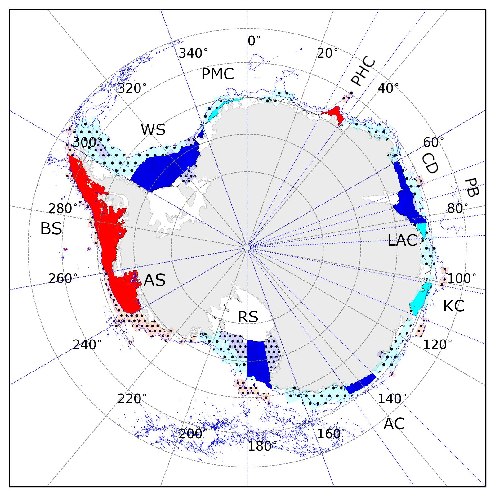
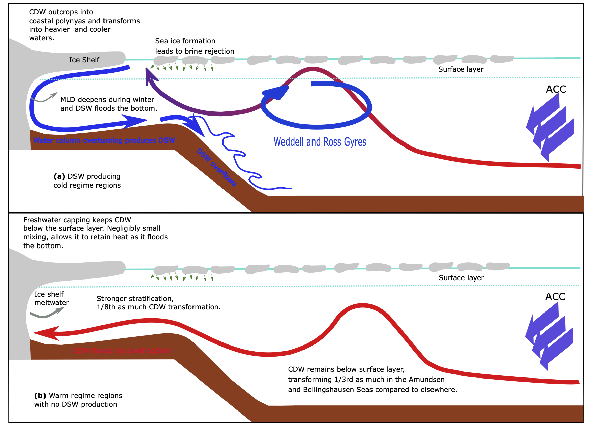

Antarctic
continental shelf and continental shelf break processes.

Antarctic continental shelf regimes showing cold (blue), warm (red), and
intermediate (cyan) bottom temperature regimes. See
here for
more details.
Oceanic
heat transport pathways onto the Antarctic continental shelf

Oceanic heat pathways delivering heat to ice shelves along the Antarctic
coast are mediated by various processes. See
here for
more details.
Southern Ocean sea ice and
polynya
Upcoming work on Maud Rise polynyas from the perspective of the
surface and subsurface ocean. The upcoming studies answer the following
questions:
To form polynyas in the open ocean, the ocean needs to undergo deep
vertical mixing which helps bring heat from the underlying layers.
However, when deep mixing initiates and melts sea ice at the surface,
the surface freshens. How did the ocean overcome this restratifying
effect and sustain deep mixing to keep the polynya open in 2017 over the
Maud Rise?
The principal source of warm and saline waters in the Maud Rise is
via the eastern limb of the Weddell Gyre. This current undergoes large
interannual variability. How does this variability impact the
stratification of the Maud Rise? Does this play a role in polynya
formation?